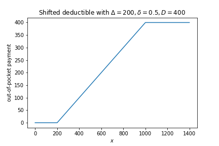
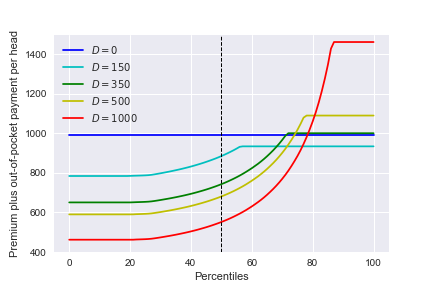
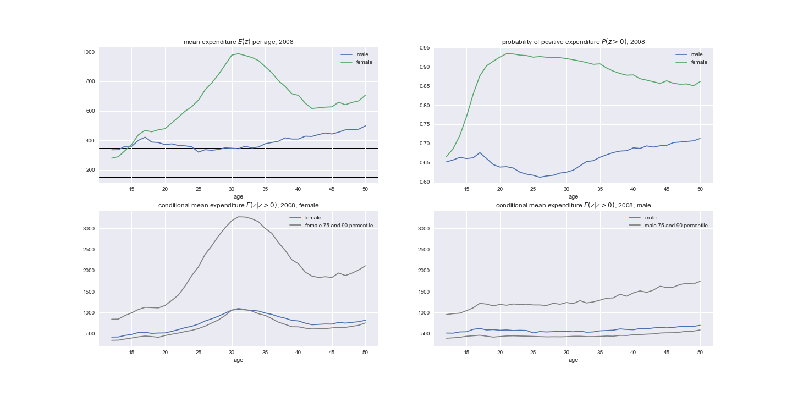
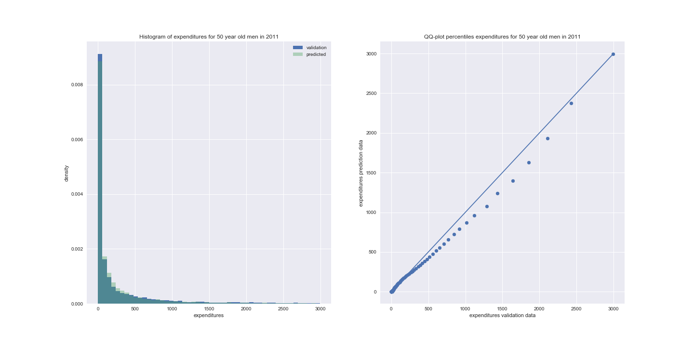
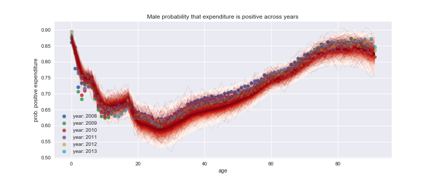
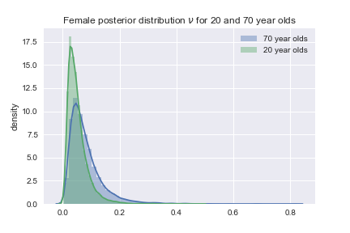
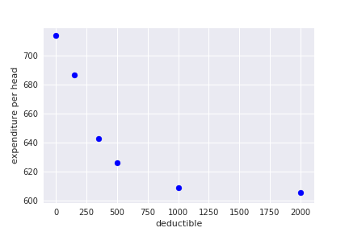
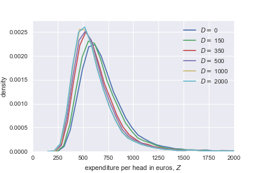

Health Care Expenditures
Jan Boone, Minke Remmerswaal, and Bram Wouterse
Table of Contents
Introduction
Motivation
- worries about level/growth healthcare expenditures
- demand side cost sharing contains expend.
- currently 385 euros mandatory deductible in NL
- trade off demand side cost-sharing:
- lower expenditures
- higher out-of-pocket for "sick" people
- find form of demand side cost sharing to alleviate this trade off?
forms of cost sharing
- popular with Dutch policy makers:
- deductible
- co-payment (say 25%)
- shifted deductible ("donut")
- CPB is supposed to "predict" healthcare expenditures under different schemes
cost sharing

Figure 1: Out-of-pocket payments with a shifted deductible.
Research question
- what are the effects of different cost-sharing schemes on healthcare spending?
- difficulty: after the reform, the Netherlands has only featured deductibles
- so we can estimate \(y_{it} = ... + \alpha D_t + \varepsilon_{it}\)
- but cannot determine effect of a 25% co-payment
Method
- use Bayesian estimation techniques to determine distributions of healtcare costs (per age-gender category)
- determine (expected) out-of-pocket payment (OOP) for each category
- determine effect of OOP on healthcare expenditures
- then for each scheme we determine OOP and then expenditures
Why Bayesian?
- distributions of healthcare spending are important for cost-sharing schemes
- "standard" econometrics is based on sampling variation
- but we have data on the whole population
- we want policy recommendations that include uncertainty
- Bayesian approach can easily work with distributions
- it is fun!
Policy recommendation
- distribution of expenditures for given parameters
- distribution of parameter values

Figure 2: Trade offs increasing deductible
Distributions

Figure 3: Expenditure distributions
Literature
Modeling healthcare expenditures
- Einav et al. (2013)
- Hayen et al. (2019)
- Remmerswaal et al. (2019)
Model
Simple model
- one treatment per period: cost and value

Total healthcare expenditure in a year
- \(H(z)\): distribution of healthcare expenditure in a year
- where \(z=x+y\)
- \(x\): exogenous, not affected by cost-sharing, high-value care
- if you break your leg, you get "plastered up"
- \(y\): endogenous, affected by cost-sharing
- if you have a running injury, perhaps you skip the physiotherapy
Idea of the model
- "at the start of the year", person \(i\) is offered one \(y\) treatment with value \(v_y\) and expected out-of-pocket \(OOP\)
- \(i\) accepts if \(v_y\) exceeds expected \(OOP\)
- \(OOP\) depends on:
- \(f(x)\) ex-ante distribution of exogenous healthcare expenditure
- \(g(y)\) cost distribution of offered treatment \(y\)
- cost-sharing scheme
- for a deductible \(D\), \(OOP\) equals \(\int_0^{+\infty} \int_0^{+\infty} (\min\{x+y,D\}-\min\{x,D\})f(x)g(y)dxdy\)
Data
Dutch healthcare expenditure
- expenditures per individual for 2008-2013
- we use indiv.'s age and gender
- later add income, indicators for health status
- expenditures are for basic insurance under the deductible (e.g. not GP)
- basic insurance is mandatory in the Netherlands
- coverage is set by the government
- we ignore people with voluntary deductible (for the moment)
- deductible "kicks in" at 18
Estimation
Parametric specification
- "everybody knows" that healthcare expenditures are log-normally distributed:
- log transformation of positive healthcare costs are normally distributed
- we model the propability of zero healthcare costs
- benefits of log-normal distribution:
- analytical expression for \(OOP\) with deductible (estimation)
- analytical expression for distribution of \(x+y\)
Two distributions

Figure 5: Illustrative distributions for positive healthcare costs (left in levels, right in logs)
Four components
- define categories age by gender
- each category distribution (log) healthcare costs \(z\)
- distribution is mixture:
- \(x \sim N(\mu_x,\Sigma_x)\), given gender a Gaussian Process with age; year fixed effects
- same for \(y\)
- \(\psi\) is probability treatment is offered (\(x > 0\)), GP with age
- \(\phi\) is same for \(y > 0\)
OOP
- people in each category know their \(\psi,\phi\) and their distributions of \(x,y\)
- calculate \(OOP\) per age, gender, year with \(x,y,\psi,D\)
- compute probability \(F\) that \(y\) is rejected (\(v_y < OOP\))
- \(F(OOP) = 1-\zeta e^{-\nu*OOP}\)
Probabilities
- calculate probability for each mixture component
| component | probability |
|---|---|
| \(x=y=0\) | \((1-\psi)(1-\phi + \phi F)\) |
| \(x>0=y\) | \(\psi*(1-\phi + \phi F)\) |
| \(y>0=x\) | \((1-\psi)\phi(1-F)\) |
| \(x,y>0\) | \(\psi \phi (1-F)\) |
Training vs validation data
- we split the data in training, validation and test
- we estimate on training
- check fit with validation
- look at test set once we are finished
Technique
- specify priors for parameters:
- 5,000,000 observations per year
- on average 65,000 observations per category per year
- estimation with variational inference (ADVI, Auto-diff Variational Inference) and minibatches
- Markov Chain Monte Carlo methods (Metropolis, NUTS etc.) do not scale well
- python and pymc3 fun to work with
- parameter \(\phi\) has age fixed effects:
ϕ[age]
- parameter \(\phi\) has age fixed effects:
Posterior
- for each age-gender category, we draw 10,000 samples of the model parameters
- for each sample we draw one \(x,y\) and \(z\)
- that is, we draw outcomes (not averages or expectations)
- use the whole posterior distribution, not only the mode
More formally
- parameters \(\theta\)
- data \(y\)
- posterior:
\begin{equation}
Pr(\theta|y) = \frac{Pr(y|\theta)Pr(\theta)}{Pr(y)} = \frac{Pr(y|\theta)Pr(\theta)}{\int Pr(y|\theta)Pr(\theta)d\theta }
\end{equation}
- we simulate this posterior ("samples")
- for each sample, we generate an outcome (i.e. expenditure level)
Fit
How to measure fit
- not obvious how to measure the fit of the model
- we can compare:
- average expenditure per age-gender category (fit vs validation data)
- expenditure distributions per age-gender categories
- predicted vs realized (validation) zero-expenditures per category
Fit on average (log) costs by age and year: Men
Fit on average (log) costs by age and year: Women
Expenditure distributions

Figure 6: Predicted vs validation
Probability positive expenditures

Figure 7: Predicted and realized probabilities of positive expenditures for men across age and years.
Simulations
Samples
- we use \(F(OOP) = 1-\zeta e^{-\nu OOP}\)
- is the estimate for \(\nu\) "significant"?

Figure 8: Posterior distribution of \(\nu\) for women
- we have these distributions for each parameter
Deductible: average effect

Figure 9: Average healthcare expenditures per capita for different deductibles.
Deductible: uncertainty average effect

Figure 10: Distribution average healthcare expenditures per capita for different deductibles.
Deductible: distribution effects
Figure 11: Trade offs increasing deductible
Conclusion
Summary
- in order to determine healthcare expenditures under different cost sharing schemes:
- we estimated the distributions of healthcare expenditures
- split expenditures up in exogenous and endogenous expenditures
Summary (cont)
- determined expected OOP for endogenous expenditures under different schemes
- estimate the value distribution of these endog. expenditures
- the higher OOP, the more likely an (endogenous) treatment is rejected
- allows us to simulate effects of different schemes
Policy recommendations
- Bayesian analysis allows us to:
- work with posterior distribution of parameters
- instead of just the mode (or mean)
- present uncertainty about each "object"
- parameter estimate
- average effect
- distribution effects include:
- uncertainty of expenditures for given parameter values
- uncertainty about parameter values
- work with posterior distribution of parameters
Robust recommendation
- having a small but strictly positive deductible makes everyone better off compared to zero deductible
- because the deductible reduces expenditures, it reduces the insurance premium
- to such an extent that even people with the highest expenditures are better off than with no deductible
- higher deductibles reduce expenditures further, but "sick" people than have higher out-of-pocket payments